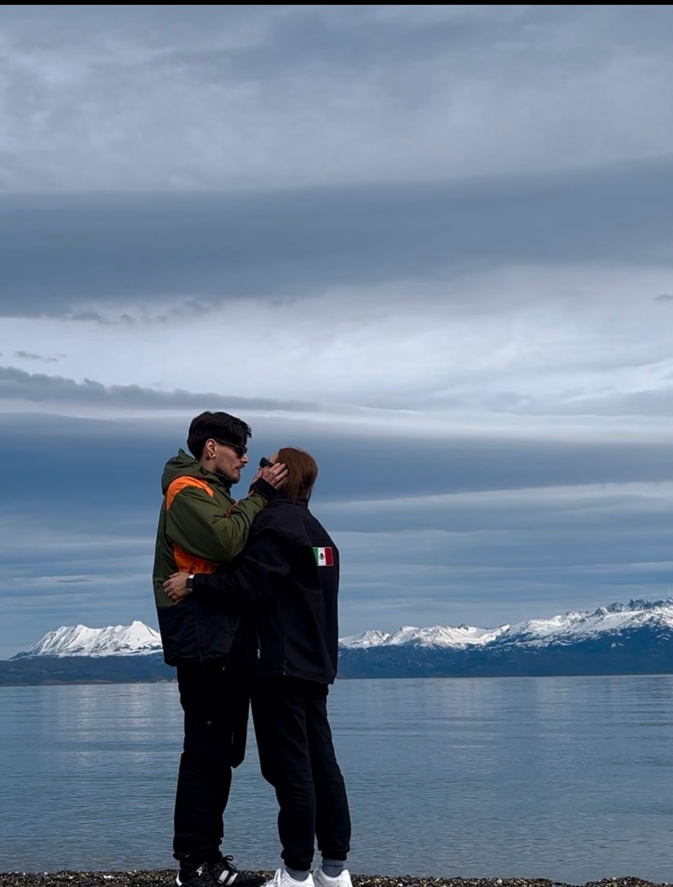
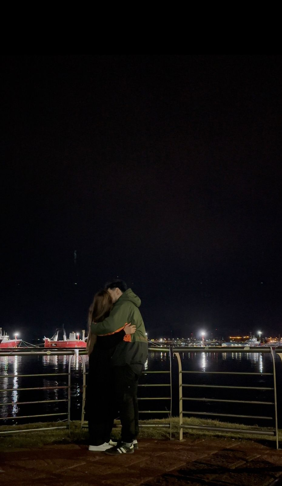

Se termina un año más y no quería dejarlo pasar sin escribirte estas palabras. A veces en el día a día damos por sentadas muchas cosas, y yo no quiero dar por sentado nuestra historia.
Hace casi tres años que caminamos juntos, con momentos hermosos, con otros no tanto, pero siempre aprendiendo. Aprendí de vos, de tu forma de ver la vida, de tu fuerza, de tu sensibilidad y también de tus silencios. Aprendí a amar de una manera más real, más consciente.
Este año nos puso a prueba, como la vida misma. Hubo risas, planes, enojos, charlas largas y también momentos de distancia, pero aun así acá estamos. Y para mí eso vale mucho. Porque elegirnos no siempre es fácil, pero es una decisión que sigo tomando. Crecimos, cambiamos y aun así seguimos eligiéndonos.
Quiero agradecerte por lo que sos, por lo que das, y también por lo que intentas incluso cuando no es sencillo. No somos perfectos, pero lo nuestro es verdadero, y eso hoy lo valoro más que nunca.
Ojalá el año que viene nos encuentre creciendo, escuchándonos más, cuidándonos mejor y celebrando lo que somos. Yo deseo seguir caminando a tu lado, con errores, con aprendizajes y con amor.
Gracias por este año y por cada uno que compartimos.
Feliz fin de año, amorcito.